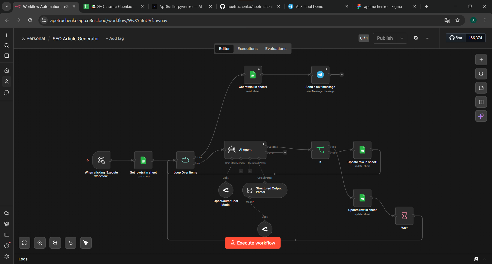

Artem Petruchenko
AI automations, integrations, bots
I automate operational processes where teams spend time on repetitive work: qualifying leads, answering from a knowledge base, generating content, connecting CRM with messengers. Less routine, more bandwidth for the team.
Background
I came to AI automations from a marketing background — running digital and SEO before switching focus to AI. The operational side of business is familiar territory.
Now I build AI + n8n + knowledge-base setups for specific team needs: lead qualification, customer answers, content generation, integrations. Not just "technically working", but actually solving the problem teams come with.
Looking for a full-time role on a product team. Open to contract.
Cases
Three working cases with live demos and workflow architecture. Each one is a full AI-to-operations setup, not a toy demo.
AI lead qualifier for inbound requests
Inbound leads come in vague: "we need a website", "want SEO", "run ads for us". Sales has to manually pull out the actual task, budget, timeline, niche and urgency before each call.
A request from the website or form → AI clarifies the brief and qualifies the lead: service, budget, timeline, niche, urgency, priority → record in Google Sheets/CRM → Telegram alert to the manager with a structured card and a draft reply.
- The manager sees lead priority before the call
- All leads in Sheets/CRM tagged by service, budget, urgency
- A draft reply helps continue the conversation faster
- Weak and irrelevant leads are easy to filter out without manual review

AI assistant answering from a knowledge base
Potential clients often don't know what they need: SEO, ads, social, a website, or full strategy. Before any call, a sales manager keeps answering the same questions and routes people to the right service by hand.
A Telegram bot with RAG. Service descriptions, FAQ, cases and conditions are loaded into a knowledge base — the bot answers questions, helps choose a direction, and escalates non-standard requests to a human.
- Answers from the actual knowledge base — no made-up conditions
- Keeps context across the conversation
- Combines data from FAQ, cases, pricing and service descriptions
- Honestly says "don't know" and routes to a human

AI assistant for SEO and content teams
SEO and content teams need to quickly produce briefs, structures, title/meta and first drafts for a list of keywords. Preparing each starter manually eats editor time and slows down content production.
List of keywords in Google Sheets → workflow on schedule or on click prepares title, meta description, H1, structure, key points and a first markdown draft → writes the result back to the sheet → sends a digest to Telegram.
- Article structure based on keyword and intent: guide, explainer, comparison or list
- SEO starters: title, meta description, H1 and main H2s
- A first draft the editor can polish, instead of writing from scratch
- Structural blocks: comparison tables, pros/cons lists, step-by-step plans
- The prompt can be tuned to niche, tone of voice and editorial rules

How I work
Document what I build
Every workflow comes with a short readme. A month later, anyone can open it and figure out what runs and why. Without that, automation dies the first time someone leaves the team.
Honest about boundaries
If a task is outside my expertise, I say so upfront. Better to pass at the start than build something flawed and let the team down halfway through.
Prototype before architecture
Working minimum on real data first, then complexity. I don't design clean architecture for a problem I haven't fully understood yet.
Test on real cases
Not "technically works", but actually solves the problem teams come with. I run on real data, debug what breaks.
Tools
Get in touch
Telegram or email — usually reply within a day.